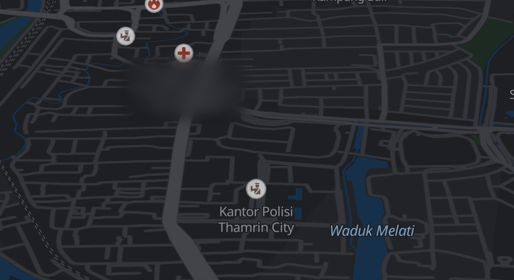

Pulang malam?
Jalan mana yang aman?
Aplikasi peta
memilih yang
tercepat.
Bukan yang
teraman.
Jalan sepi, minim lampu
13 mnt
Setiap ruas jalan
dinilai risikonya.
Dari empat sinyal.
01
Laporan warga
02
Jalan gelap
03
Sepi & jam rawan
04
Jarak ke bantuan
Pilih rute yang
lebih aman.
Risiko tiap rute terlihat sebelum berangkat.
+5 menit,
risiko turun
67,6%
Selisih 0,3 km · skenario prototipe
Pelindung aktif
Lokasimu dibagikan langsung ke orang rumah.
Sudah sampai.
Orang rumah sudah dikabari.
Rute
Aman
SOS
Tekan SOS, kontak daruratmu diberi tahu.
Rute
Aman
Pulang malam,
tetap tenang.
Rute terang, kabar untuk orang rumah.